★마크다운이 원본이다. 이 파일을 직접 고치면 다음 빌드에서 사라진다 — python3 scripts/build_docs.py
원본: README.md
규칙 기반 → 고전 ML → GNN → 3D → 파운데이션 모델. 5개 모델 세대를 36개 ADMET 엔드포인트(독성 18 + ADME 18)에서 동일 분할·동일 지표로 다시 재본 결과, 세대가 올라간다고 성능이 따라 올라가지는 않았다 — 그리고 언제 올라가는지는 측정할 수 있었다.
In three lines (EN)
공개 배포된 ADMET 예측기를 기준선으로 삼으려 했다. 그런데 이상한 일이 생겼다.
그 도구가 자기 논문에 보고한 성능보다, 내 test set에서 더 잘했다.
보통은 반대여야 한다. 남의 데이터, 남의 분할에서는 성능이 떨어지는 게 정상이다. 올라간다는 건 그 도구의 학습 데이터가 내 평가셋 안에 들어와 있다는 뜻이다.
누수 증거는 셋이었다 — ⑴ TDC 전체로 사전학습 ⑵ 자체보고 성능 초과 ⑶ 누수 없이 학습한 동종 모델과의 격차(핵심 4종 0.088 · 확장 0.149). 기준선으로 쓸 수 없어서 순위 판정에서 빼고, 참고선으로만 남겼다.
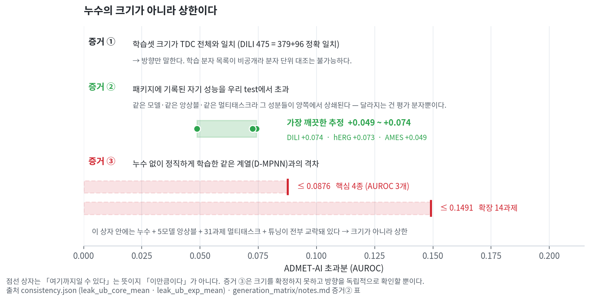
세 증거가 하는 일이 다르다. 증거 ②만 누수 크기를 추정하고(+0.049~0.074), 증거 ③이 만든 0.088·0.149는 크기가 아니라 상한이다 — 그 안에 앙상블·멀티태스크·튜닝이 함께 들어 있다. 처음엔 이걸 "누수 프리미엄"이라고 불렀고, 그 이름이 틀렸다(→ 자기정정 ①).
기준선이 없으면 만들어야 한다. 모델을 다섯 세대로 나누고 —
| 세대 | 접근 | 이 벤치마크에서 쓴 것 |
|---|---|---|
| G1 | 규칙 기반 | 구조 경보 (BRENK + NIH + Benigni-Bossa SMARTS) |
| G2 | 고전 ML | 물리화학 서술자 / ECFP4 지문 × XGBoost · RandomForest |
| G3 | GNN | chemprop D-MPNN (누수 없이 자체 학습) |
| G4 | 3D | Uni-Mol (3D conformer, 2억 분자 사전학습) |
| G5 | 파운데이션 | ChemBERTa-2 · MoLFormer (fine-tune) |
— 36개 엔드포인트에서 분할·지표·평가 절차를 완전히 고정한 채 다시 쟀다. test set 정의는 이 저장소에 들어 있고(splits/), 확정된 예측 파일에서 역산한 뒤 두 번 대조했다(scripts/extract_splits.py — seed 간 0건 · 모델 간 0건 불일치).
자를 직접 만들었다고 그 자가 정확하다는 보장은 없다. 그래서 적대적 검증을 걸었다 — 같은 알고리즘으로 표현만 바꿔보기, seed 재현 반복, 부트스트랩, DeLong 정확검정, 집계 방식 민감도 분석.
그 결과 내 초기 결론 중 8건이 뒤집히거나 철회됐다. 그중 하나(⑤ 멀티태스크 이득)는 나에게 유리한 결론을 내 손으로 기각한 것이다. 8건 전부를 아래에 공개한다. (→ 자기정정 8건)
순위를 매기는 일과 실제로 배포하는 일은 다른 문제다. AUROC 0.836짜리 모델도 기본 임계값 0.5에서는 양성을 하나도 못 잡았다(Tox21 NR-PPAR-gamma: 민감도 0.000 · 특이도 1.000). 권고 작동점 t*=0.157로 내려야 민감도 0.304가 되고 놓친 양성이 46→32건으로 준다. ADME CYP2C9 기질은 0.5에서 민감도 0.026 — 양성 37건 중 36건을 놓친다.
다만 t*도 만능이 아니다. DILI는 t*가 0.712로 올라가면서 민감도가 0.94→0.66으로 악화된다(놓친 양성 3→17건). ★이 t*는 valid 200분자에서 MCC 최대로 고른 값이고, 악화 원인은 규명되지 않았다 — "valid가 작아서"로는 설명되지 않는다(발암성은 valid 28분자, ClinTox는 144분자로 더 작은데 둘 다 개선된다). ADME에서도 t*가 악화시키는 엔드포인트가 4개 있다(BBB 0.95→0.76 등). 소표본에서는 임계값 튜닝도 믿을 수 없다.
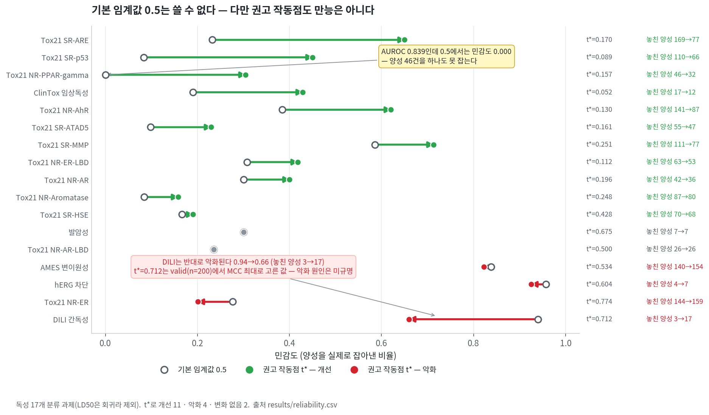
독성 17개 분류 과제 중 t*가 개선시킨 곳이 11개, 악화시킨 곳이 4개, 변화 없는 곳이 2개다. 화살표가 양방향인 것이 요점이다 — "t*를 쓰면 된다"가 아니라 작동점은 엔드포인트마다 따로 정해야 한다.
적용 도메인(AD)도 만능이 아니었다.
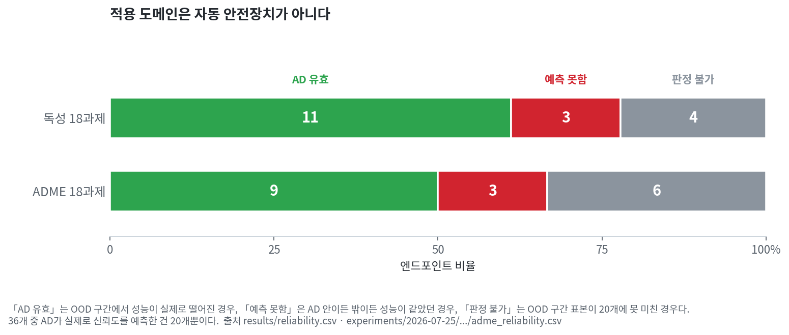
"판정 불가"는 OOD 구간 표본이 20개 미만이라 판단 자체를 못 한 경우다. AD는 자동 안전장치가 아니다.
| AD 유효 | 성능 예측 못함 | 판정 불가 | |
|---|---|---|---|
| 독성 18 | 11 | 3 | 4 |
| ADME 18 | 9 | 3 | 6 |
그래서 이 저장소에는 순위표만이 아니라 엔드포인트별 권고 작동점과 AD 유효 여부가 함께 들어 있다(results/reliability.csv).
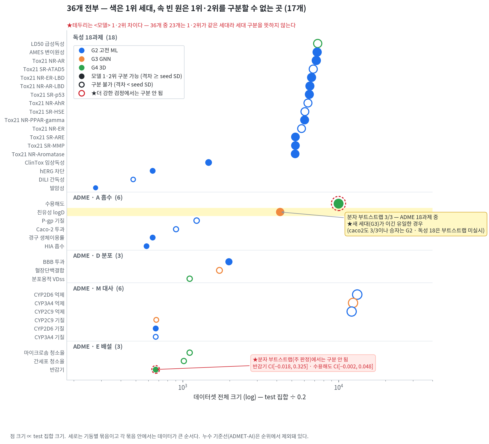
가로가 데이터 크기, 색이 1위 세대, 속이 빈 원은 1위와 2위를 구분할 수 없는 곳이다. 이 한 장에서 아래 세 절이 전부 보인다 — 파란색(2세대)이 대부분이고, 속 빈 원이 절반 가까이(17/36)이며, 노란 줄(친유성 logD)만이 재표집을 견딘 세대 효과다.
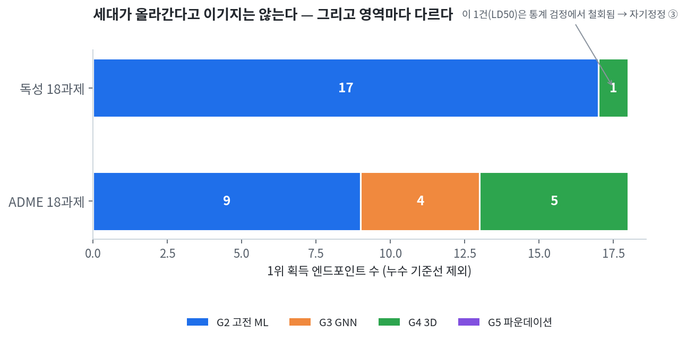
독성 18과제 — 2세대(고전 ML)가 17개에서 1위. 누수 없이 학습한 3세대 GNN의 1위는 0개, 5세대도 0개. DeLong 대응비교에서 유의한 차이는 17건 중 10건이었고 전부 2세대 우세였다(LD50은 회귀 과제라 DeLong 대상이 아니어서 분모가 17이다). 남은 1개는 4세대가 LD50에서 가져갔지만 — 그 1승은 통계 검정에서 철회됐다(→ 자기정정 ③). 4세대가 독성에서 평가된 기회는 애초에 4회뿐이었고, 순위상 1/4, 검정 후 0/4다.
ADME 18과제 — 결과가 갈렸다. 2세대 9 · 4세대 5 · 3세대 4 · 5세대 0.
즉 "세대 ↑ = 성능 ↑"는 두 영역 어디에서도 성립하지 않았고, 영역에 따라 승자 분포 자체가 달라졌다.
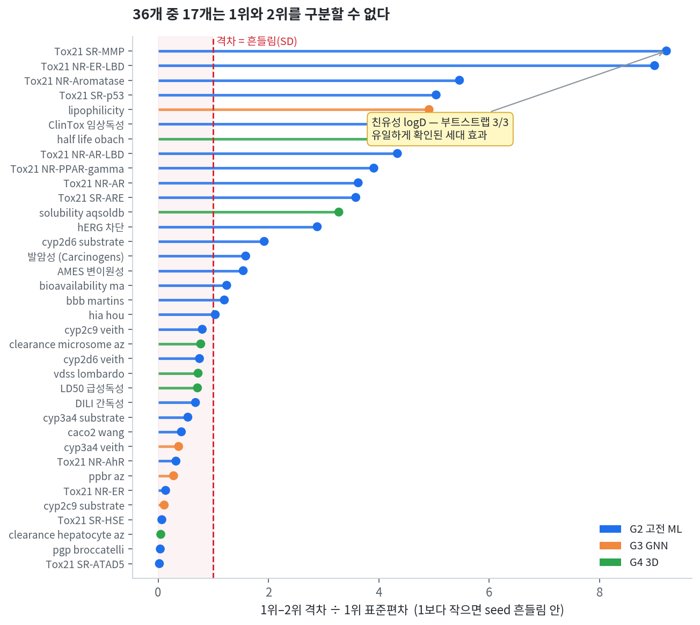
순위표에서 1위가 바뀌는 것과, 그 차이가 흔들림보다 큰 것은 다르다. 36개 중 17개에서 1위–2위 격차가 1위 자신의 seed 표준편차보다 작았다. 순위는 있지만 그 순위를 근거로 쓸 수 없다는 뜻이다.
새 세대가 이긴 경우로 재표집을 통과한 것은 친유성(logD) 하나뿐이다. 3세대 GNN이 2세대 세 모델 전부를 이겼고 부트스트랩 신뢰구간이 셋 다 0을 넘지 않았다(3/3).
반대 방향으로는 더 있다. Tox21 3개 assay(NR-Aromatase · SR-ARE · SR-MMP)에서 격차가 구분 가능선을 넘었고 셋 다 2세대 > 3세대다. 즉 통계적으로 구분되는 세대 효과는 4건이고, 그중 3건이 통념과 반대 방향이다.
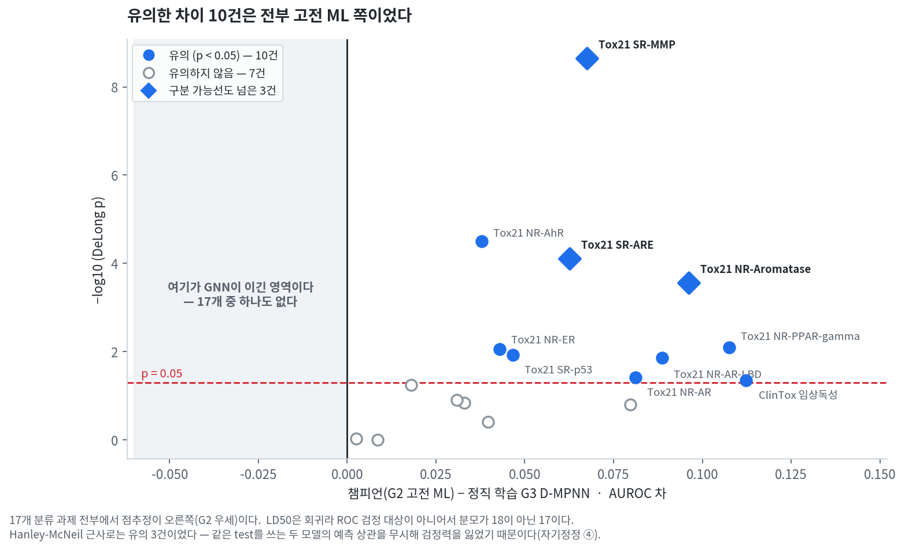
DeLong 대응비교 17건에서 점추정이 왼쪽(GNN 우세)으로 간 과제는 하나도 없다. 유의한 10건은 전부 고전 ML 쪽이었고, 그중 3건은 구분 가능선까지 넘었다. 처음에는 Hanley-McNeil 근사로 유의 3건이었는데, 그 근사가 같은 test를 쓰는 두 모델의 예측 상관을 무시해 검정력을 잃고 있었다(→ 자기정정 ④).
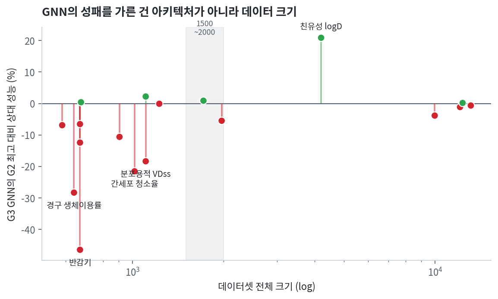
| 데이터셋 전체 크기 | 2세대 최고 대비 GNN 평균 성능 |
|---|---|
| n < 1500 (11개) | −13.5% |
| n ≥ 2000 (5개) | 【확인 중】 |
작은 데이터에서 GNN이 진 것은 GNN이 나빠서가 아니라 데이터가 모자라서로 읽는 게 자연스럽다. 그리고 위의 유일한 확실한 세대 효과(logD, +20.9%)도 큰 데이터 쪽에서 나왔다.
이 결과가 말하는 것 / 말하지 않는 것
말한다 — 세대가 올라간다고 성능이 자동으로 올라가지는 않는다. 데이터 규모와 엔드포인트의 성격이 세대보다 큰 변수였다. 그리고 대부분의 순위 차이는 통계적으로 얇다.
말하지 않는다 — "딥러닝은 별로다". 이 저장소는 반대 방향의 증거도 직접 만들었다. 데이터가 충분한 logD에서는 3세대 GNN이 부트스트랩 3/3으로 이겼고, ADME 18과제 중 5개에서는 4세대가 1위다. 5세대의 0승도 "모델의 한계"가 아니라 이 예산·이 튜닝 조건에서의 결과로 읽어야 한다(→ 한계).
결론의 정확한 형태는 "조건에 따라 다르다" 이고, 이 저장소가 하려는 일은 그 조건이 무엇인지를 재는 것이다.
HTML 보고서는 GitHub Pages로 공개되어 있다. (저장소에서 .html을 클릭하면 소스가 보이므로 아래 링크로 볼 것)
| 보고서 | 내용 |
|---|---|
| 통합 보고서 ★ | 36과제 전부 · 배포 가이드 · 자기정정 8건 — 여기부터 보면 된다 |
| 독성 세대 벤치마크 | 독성 18과제 · §11 배포 가이드 |
| 독성 배포 신뢰도 | 작동점 · AD · 보정 |
| ADME 3축 보고서 | ADME 18과제 (세대 · 특징 · 학습방식) |
| ADME 배포 신뢰도 | §7 배포 가이드 |
| G4 검증 | 반감기 · 수용해도 4세대 재검증 |
📄 학회 초록: IEIE 2026 (ADME 세대 벤치마크) — notes/abstract_IEIE2026/
원본 데이터셋은 저장소에 넣지 않았다(TDC에서 재다운로드). 대신 어느 분자가 test set인지에 대한 정의는 전부 커밋되어 있다.
git clone https://github.com/Nudge92/admet-generation-benchmark.git
cd admet-generation-benchmark
pip install -r requirements.txt
# 1. 커밋된 test set 정의 확인 (36개 · sha256 지문 포함)
head splits/_manifest.csv
# 2. 예측 원자료에서 지표 재계산
python scripts/verify_results.py --predictions predictions/ --against results/
# 3. 그림 재생성 (14장 — 확정된 CSV/JSON만 읽는다. 새 학습·새 계산 없음)
python scripts/make_figures.py # 그림 1~3 · sc03 · sc06 · sc08
python scripts/make_figures2.py # 그림 4~8 · sc00 · sc05 · sc07
이 저장소가 재현을 보장하는 범위는 층마다 다르다. 정확히 적어둔다.
| 층 | 상태 |
|---|---|
| test set 정의 | 36개 전부 커밋. 확정 예측 파일에서 역산했고 seed 간·모델 간 대조 0건 불일치 |
| 집계 지표 | results/*.csv가 보고서에 실린 확정 수치. 보고서 HTML은 여기서 생성됨 |
| 예측 원자료 | G2·G3 구간은 전부, G4·G5는 일부. 독성은 챔피언 재현 학습으로 18/18을 메웠고, ADME는 logD만 메웠으며 G4·G5는 한계로 남겼다 |
| 예측의 성격 | ★모델 아티팩트를 저장하지 않아 동일 config·seed·분할로 재현 학습 후 추론한 재현본이다. 18/18이 허용오차 0.005 안에서 통과(reproduction_check.json, n_fail: 0) |
| DeLong·부트스트랩 재계산 | 예측 원자료가 있는 구간에 한해 가능 |
| 모델 재학습 | 보장하지 않음. 체크포인트·원본 데이터 미포함 |
configs/에 seed가 명시되어 있다. seed 집계 방식(예측 평균 vs seed별)에 따라 결론이 뒤집힌 사례가 실제로 있으므로(→ 자기정정 ⑧), 비교하려면 집계 방식을 먼저 맞춰야 한다.
엔드포인트 안에서 모든 모델이 같은 test set을 쓴다는 뜻이다. 엔드포인트 사이에 같은 분자를 쓴다는 뜻이 아니다(Tox21만 해도 assay별 n_test가 1051~1437로 다르다 — 라벨이 희소해서 정상이다).
예외가 하나 있다. Uni-Mol(G4)은 3D conformer 생성에 실패하는 분자를 평가할 수 없다. 반감기 134개 중 6개, 수용해도 1995개 중 17개가 여기 해당한다. G4 비교에서는 같은 분자를 G2에서도 제외해 짝을 맞췄지만(교집합 Jaccard 1.0), G4 비교만 약간 작은 test set 위에서 이뤄진다.
🚧 작성 예정 — 통합 파이프라인 v2 완성 후 채웁니다.
예정 기능: SMILES 입력 → 36개 엔드포인트 예측 → 엔드포인트별 권고 작동점 적용 → AD 밖일 경우 경고.
임계값 0.5는 이 벤치마크에서 사용 불가로 판정된 엔드포인트가 있으므로, 파이프라인은
results/reliability.csv의t_star열을 기본 작동점으로 쓸 예정입니다.
벤치마크를 만드는 과정에서 내 초기 결론 8건이 뒤집히거나 철회됐다. "무엇이 잡아냈나" 열이 이 표의 핵심이다 — 각 항목은 실수의 목록이 아니라, 걸어둔 검증 장치가 실제로 작동한 기록이다.
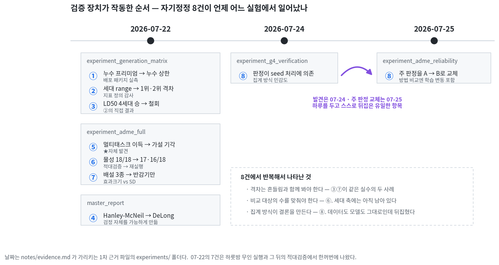
experiments/의 날짜 폴더를 그대로 둔 이유가 이 그림이다. 7건은 07-22 하룻밤 실행과 그 뒤의 적대검증에서 한꺼번에 나왔고, ⑧만 07-24에 발견해 07-25에 주 판정을 바꿨다.
| # | 처음 주장 | 정정 후 | ★ 무엇이 잡아냈나 | 근거 |
|---|---|---|---|---|
| ① | 공개 도구의 초과분 = "누수 프리미엄" | "누수 상한"으로 격하 — 5모델 앙상블 × 31과제 멀티태스크가 교락되어 누수 단독 효과를 분리할 수 없음. 깨끗한 추정치는 +0.049~0.074 | 배포 패키지 실측 (적대검증 CRITICAL) | generation_matrix/notes.md:81 |
| ② | 세대 구분선을 "세대 최고 − 세대 최저" 폭으로 측정 | "1위 vs 2위 격차"로 변경 — 폭은 최하위 세대가 만드는 값이라 1위의 우위를 함의하지 않음. 바꾸자 핵심 4종이 4/4 구분 불가 | 지표 정의 감사 (적대검증 CRITICAL) | generation_matrix/notes.md:86 |
| ③ | "LD50은 4세대 승 — 유일한 세대 효과" | 철회 — 격차 0.013 < 구분 가능선 0.043. 핵심 4종 0/4. ★그 구분 가능선 자체도 누수된 값으로 계산돼 있어 0.023→0.043으로 정정됨 | ②의 직접 결과 | generation_matrix/notes.md:86 |
| ④ | Hanley-McNeil 근사로 AUC 비교 (유의 3건) | DeLong 대응비교로 교체 (유의 10/17건). 먼저 챔피언의 분자별 예측을 새로 만들어 검정 자체를 가능하게 했다 | 검정 방법 교체 | master_report/notes.md:47-48 · 정정 전 HTML 보존 |
| ⑤ | "멀티태스크 학습에 이득이 있다 (9/10)" | 가설 기각 — CYP 3종이 같은 분자 라이브러리라 합집합 train에 test 분자의 88.9%가 섞임. 차단 후 CYP 억제 +0.0004 · 기질 −0.024 | 누수 대조 분석 · 자체 발견 | adme_full/notes.md 축③ · learning_axis.csv |
| ⑥ | "물성 기술자 18/18" (철회된 표현) | 17/18 (동일 XGB) · 16/18 (동일 RF) — 빠져 있던 rf_ecfp를 실제로 돌려 2×2 대칭으로 재집계 |
적대검증 HIGH → 재실행 | src/rf_ecfp_symmetric.py |
| ⑦ | "배설 3종 4세대 우세" (철회된 표현) | 반감기만 뚜렷(Δ0.156 > SD). 간세포 청소율 Δ0.0025 ≪ SD 0.017~0.051, 마이크로솜 Δ0.0258 < SD 0.0288 → 동률. 원문 자기평가: "방향은 진짜 · 표현 과했음" | 효과크기 vs 표준편차 대조 | adme_full/notes.md 축① |
| ⑧ | G4 검증 판정 "구분됨" 확정 | 판정이 seed 처리 방식에 의존 — 예측평균(A) 구분됨 / seed별(B) 구분 안 됨. 앙상블이 설명하는 몫 수용해도 45% · 반감기 22%. ★이후 주 판정을 B로 교체 | 집계 방식 민감도 분석 | g4_verification/notes.md · adme_reliability/notes.md:75 |
📎 8건 전부의 상세 경위·수치: notes/self_corrections.md
📎 각 정정이 어느 파일 어느 줄에서 일어났는지: notes/evidence.md — 정정 전 보고서 HTML과 실행 코드까지 저장소에 들어 있다
③ LD50 4세대 승 → 철회. 판정 기준을 세대 범위에서 1위·2위 격차로 바꾸자 핵심 4종이 전부 구분 가능선 안으로 들어왔다. LD50의 구분 가능선 자체도 누수된 값으로 계산돼 있어 0.023→0.043으로 정정됐다.
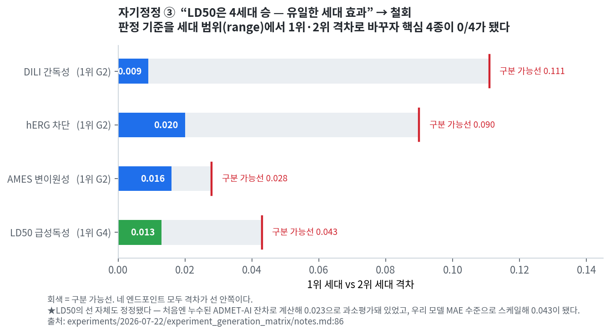
⑥ "18/18"의 정체는 비대칭 로스터. 물성 쪽에 2개 모델, ECFP 쪽에 1개 모델이 들어가 있었다. 알고리즘을 맞추자 17/18 · 16/18로 내려갔다.
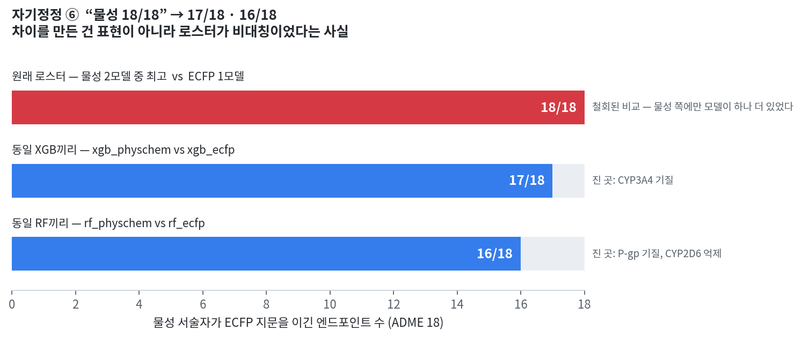
⑧ seed를 어떻게 묶느냐로 결론이 뒤집힌다. 예측을 먼저 평균내면 변동이 큰 Uni-Mol이 더 이득을 본다.
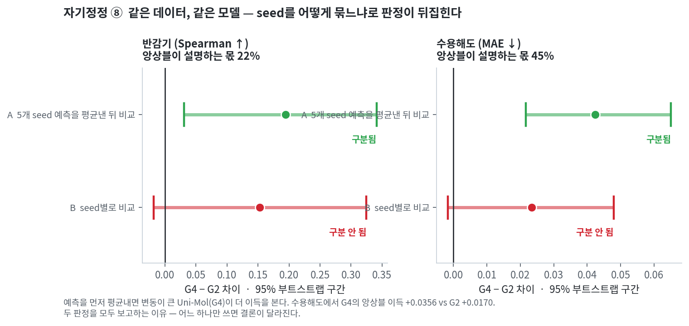
⑤ 멀티태스크와 ⑦ 배설 3종의 그림은 notes/self_corrections.md에 있다.
results/g4_verification.json의 primary_method 라벨이 "5seed"로 잘못 적혀 있다 — 반감기에만 해당)..
├── docs/ # HTML 보고서 6개 (GitHub Pages) + 그림
├── results/ # 확정 집계 지표 · 통계 판정 (CSV/JSON)
├── splits/ # ★ test set 정의 36개 + sha256 지문
├── predictions/ # 예측 원자료 (.jsonl.gz) — DeLong·부트스트랩 재계산용
├── notes/ # 자기정정 8건 상세 · 방법 · 학회 초록
├── experiments/ # 원본 실험 트리 (07-22 · 07-24 · 07-25) — 코드와 결과
└── scripts/ # 분할 역산 · 그림 생성 · 저장소 빌드
원본 데이터와 모델 체크포인트는 커밋하지 않았다(.gitignore 참조). 대신 분할·설정·집계 지표·예측 원자료는 커밋했다 — 재현에 필요한 건 다시 받을 수 있는 파일이 아니라 그때 내린 결정이기 때문이다.
experiments/의 날짜 폴더 구조를 그대로 뒀다. 07-22에서 내린 판정이 07-24에서 뒤집히고 07-25에서 통합된 흔적이 자기정정 ⑧의 실물 근거라서, 깨끗하게 재편하면 그 기록이 사라진다.
@misc{admet_generation_benchmark_2026,
title = {ADMET Generation Benchmark: Do newer model generations actually predict better?},
author = {Nudge92},
year = {2026},
url = {https://github.com/Nudge92/admet-generation-benchmark}
}
관련 저장소: admet-lipophilicity-prediction — 이 벤치마크에서 유일하게 통계적으로 확인된 세대 효과가 나온 엔드포인트를 단독으로 다룬 이전 작업.
scripts/, experiments/의 소스): MITdocs/, notes/, results/): CC BY 4.0splits/는 원 데이터의 SMILES와 라벨만 담고 있다.원본: notes/self_corrections.md
이 문서는 벤치마크 제작 과정에서 뒤집히거나 철회된 결론 8건의 전체 기록이다. 각 항목은 처음 무엇을 주장했고 · 무엇이 그걸 잡아냈고 · 지금은 무엇이 맞는지 순서로 적었다.
이 기록을 남기는 이유: 벤치마크의 신뢰도는 "틀린 적이 없다"가 아니라 "틀렸을 때 잡아내는 장치가 실제로 작동했다"로 세워진다고 보기 때문이다.
📎 각 정정이 어느 파일 어느 줄에서 일어났는지는
evidence.md에 있다. 정정 전 보고서 HTML과 재집계 실행 코드까지 저장소에 들어 있다.표기 — Δ는 1위·2위 격차, SD는 seed 표준편차, CI는 95% 부트스트랩 신뢰구간. 근거 파일은 각 항목 끝에 적었다.
7건이 07-22에 몰려 있는 건 그날 하룻밤 무인 실행이 끝나고 적대검증을 한꺼번에 걸었기 때문이다. ⑧만 발견(07-24)과 주 판정 교체(07-25)가 하루 떨어져 있다 — 아래 ⑧에 그 경위를 적었다.
처음 주장 — ADMET-AI가 우리 정직 학습 모델보다 잘 나오는 초과분을, 데이터 누수가 만들어낸 이득의 크기("누수 프리미엄")로 명명했다.
무엇이 잡아냈나 — 교락 변수 점검. 적대검증에서 CRITICAL로 분류.
정정 후 — 그 초과분은 누수 단독의 효과가 아니다. ADMET-AI는 ⑴ 5개 모델 앙상블이고 ⑵ 31개 과제 멀티태스크로 학습됐으며 ⑶ 튜닝 예산도 다르다. 세 요인이 누수와 교락되어 있어 분리가 불가능하다. 따라서 초과분은 누수 효과의 상한으로만 읽어야 한다.
누수 판정 근거 3건 — ⑴ TDC 전체로 사전학습 ⑵ 자체 논문 보고치를 우리 test에서 초과 ⑶ 누수 없이 학습한 동종 모델과의 격차. 이 셋을 근거로 순위 판정에서 제외하고 참고선으로만 표시했다.
results/master_matrix.csv · results/adme_matrix.csv (leak_flag 열)
처음 주장 — 세대 간 차이를 "그 세대 최고값 − 그 세대 최저값" 폭으로 쟀다.
무엇이 잡아냈나 — 지표 정의 감사. 적대검증 CRITICAL.
정정 후 — 이 정의는 한 세대 안에서 가장 못한 모델 하나가 폭을 좌우한다. 실패한 설정 하나가 들어가면 그 세대가 넓게 퍼져 보이고, 그래서 "세대 효과가 크다"는 착시가 생긴다. "1위 vs 2위 격차"로 바꿨다.
이 변경 하나로 판정이 뒤집힌 곳이 있다 — LD50을 포함한 핵심 4종이 4/4 모두 구분 불가가 됐다. 그 직접 결과가 아래 ③이다.
처음 주장 — LD50 급성독성에서 Uni-Mol(G4)이 1위이므로, 이것이 독성 영역에서 확인된 세대 효과라고 봤다.
무엇이 잡아냈나 — ②의 직접 결과. 격차를 seed 흔들림과 나란히 놓자 무너졌다.
정정 후 — 철회. 그리고 LD50만이 아니라 핵심 4종 전부가 무너졌다.
| 엔드포인트 | 1위·2위 세대 격차 | 구분 가능선 | 판정 |
|---|---|---|---|
| DILI | 0.009 | 0.111 | 구분 불가 |
| hERG | 0.020 | 0.090 | 구분 불가 |
| AMES | 0.016 | 0.028 | 구분 불가 |
| LD50 | 0.013 | 0.043 | 구분 불가 — 철회 |
★기준선 자체도 정정됐다. LD50의 구분 가능선은 처음에 누수된 ADMET-AI의 잔차로 계산돼 0.023으로 과소평가돼 있었다. 우리 모델 MAE 수준으로 스케일해 0.043이 됐다. 이 항목은 측정 대상과 기준선을 둘 다 고친 셈이다.
결과 — 핵심 4종에서 G4의 확인된 승리는 0/4다. 순위표상으로는 여전히 1승으로 집계되지만 세대 효과의 증거로는 쓸 수 없다. README와 보고서는 이 둘을 항상 구분해서 적는다.
원문이 남긴 정확한 진술 —
정확한 진술은 "최신 세대가 고전을 이긴다는 증거가 없다"이며, 마찬가지로 "고전이 우월하다"는 증거도 없다.
📊 docs/assets/selfcorrection/sc03_ld50_withdrawn.png
📎 근거: experiments/2026-07-22/experiment_generation_matrix/notes.md:86 · experiments/2026-07-22/master_report/results/consistency.json → evidence.md
처음 주장 — AUC 비교에 Hanley-McNeil 근사를 썼다. 유의 판정 3건.
무엇이 잡아냈나 — 검정 방법 검토. 두 모델이 같은 test set을 쓰므로 예측이 상관되어 있는데, 독립 표본을 가정하는 근사는 이 상관을 무시해 검정력을 잃는다.
정정 후 — DeLong 대응비교(correlated ROC)로 교체. 유의 판정 10/17건.
분모가 18이 아니라 17인 이유: LD50은 회귀 과제(MAE)라 ROC 기반 검정의 대상이 아니다.
10건 전부 챔피언(G2) 우세. 통념과 반대 방향이다. G2 > G3가 구분 가능한 곳은 Tox21 NR-Aromatase · SR-ARE · SR-MMP 3곳이다.
results/finalize_check.json (delong_significant · delong_champion_wins · delong_n_compared) · results/reliability.csv (delong_vs_dmpnn_p)
처음 주장 — 멀티태스크 학습이 단일 과제 학습보다 낫다. 관측 9/10.
무엇이 잡아냈나 — 누수 대조 분석. 외부 지적 없이 자체적으로 발견했고, 결과는 나에게 불리했다.
정정 후 — 가설 기각. CYP 3종은 같은 분자 라이브러리에 라벨만 다르게 붙은 데이터셋이다. 멀티태스크로 묶으면 합집합 train에 test 분자의 88.9%가 섞여 들어간다.
⚠ 88.9%는 이득 중 누수가 차지한 비율이 아니라 train에 섞인 test 분자의 비율이다. 누수의 원인이지 효과의 크기가 아니다.
누수를 차단하고 재계산한 순수 멀티태스크 이득:
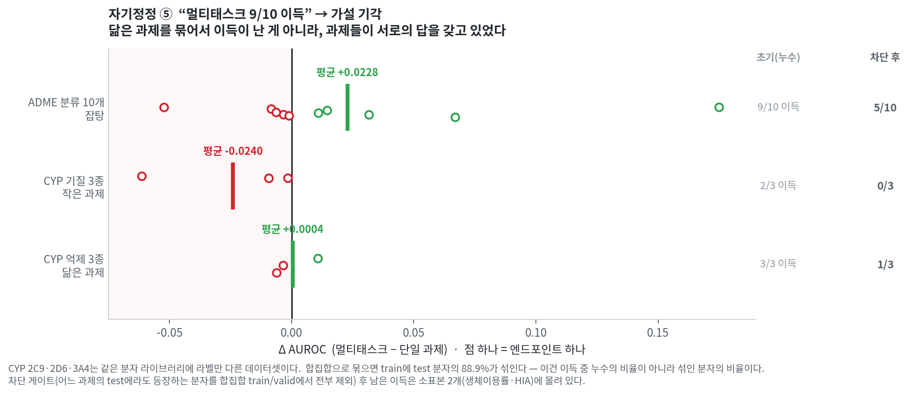
사실상 0이거나 음수다. 멀티태스크가 이득을 준 게 아니라, 과제들이 서로의 답을 갖고 있었던 것이다. 차단 뒤에도 남은 이득은 소표본 2개(생체이용률·HIA)에 몰려 있다 — "과제 유사도"보다 "데이터가 적은 과제만 덕을 본다"에 가깝다.
| 그룹 | 초기(누수) | 차단 후 이득 | 평균 델타 |
|---|---|---|---|
| CYP 억제 (닮은 과제) | 3/3 이득 | 1/3 | +0.0004 |
| CYP 기질 (작은 과제) | 2/3 이득 | 0/3 | −0.0240 |
| ADME 분류 10개 (잡탕) | 9/10 이득 | 5/10 | +0.0228 |
results/adme_matrix.csv · experiments/2026-07-22/experiment_adme_full/results/learning_axis.csv · 통합 보고서 §3 축③
처음 주장 — 물리화학 서술자가 ECFP 지문을 ADME 18개 전부에서 이긴다. ("압승"이라는 표현을 썼다 — 철회된 표현이다.)
무엇이 잡아냈나 — 적대적 검증 6렌즈. 그중 5개가 반응했다.
정정 후 — 원인은 표현의 우열이 아니라 로스터의 비대칭이었다. 물성 쪽에는 모델이 2개(XGBoost, RandomForest), ECFP 쪽에는 1개(XGBoost)만 있었다. "물성 2개 중 최고 vs ECFP 1개"를 비교하면 당연히 물성이 유리하다.
| 비교 방식 | 물성 승 | 진 엔드포인트 |
|---|---|---|
| 원래(비대칭) — 물성 2모델 중 최고 vs ECFP 1모델 | 18/18 | 없음 |
| 동일 XGB끼리 | 17/18 | CYP3A4 기질 |
| 동일 RF끼리 | 16/18 | P-gp 기질, CYP2D6 억제 |
결론은 살아남았지만 강도가 달라졌다. 물성 표현의 우세는 여전히 견고하다. 다만 "압승"은 아니다.
이 항목은 한계의 첫 줄과 직접 연결된다 — 같은 종류의 비대칭이 세대 축에도 남아 있다(G2는 3모델 중 최고, G3·G4는 1모델). 특징 축에서는 잡아 고쳤지만 세대 축에서는 고지만 하고 남겨뒀다.
📊 docs/assets/selfcorrection/sc06_asymmetric_roster.png · results/feature_2x2.csv
처음 주장 — 배설(E) 기둥 3개 엔드포인트를 G4가 전부 가져간다. ("석권" 표현을 썼다 — 철회됐다.)
무엇이 잡아냈나 — 효과크기를 표준편차와 나란히 놓기. 적대검증에서 3개 중 1개가 반박됐다.
정정 후 — 뚜렷한 건 반감기 하나뿐이다.
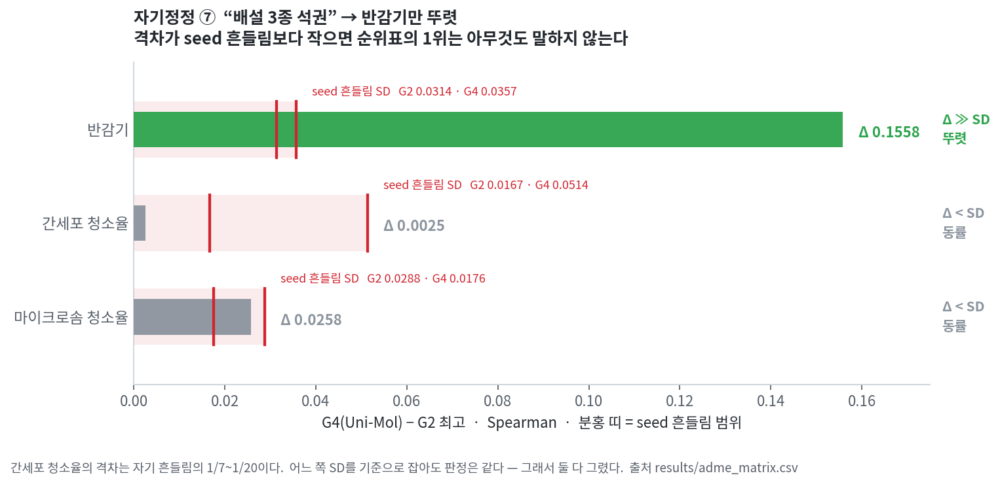
간세포 청소율의 격차는 표준편차의 1/7~1/20이다(어느 쪽 SD를 기준으로 잡느냐에 따라). 순위표에서는 1위지만 아무것도 말하지 않는 1위다.
그리고 살아남은 반감기조차 ⑧에서 다시 흔들린다.
| 엔드포인트 | G4 (Uni-Mol) | G2 최고 | Δ | G2 SD | G4 SD | 판정 |
|---|---|---|---|---|---|---|
| 반감기 | 0.4697 | 0.3139 rf_physchem |
0.1558 | 0.0314 | 0.0357 | Δ ≫ SD — 뚜렷 |
| 간세포 청소율 | 0.4244 | 0.4219 rf_physchem |
0.0025 | 0.0167 | 0.0514 | Δ ≪ SD — 동률 |
| 마이크로솜 청소율 | 0.5765 | 0.5507 xgb_physchem |
0.0258 | 0.0288 | 0.0176 | Δ < SD — 동률 |
★SD 열을 둘로 나눈 이유 — 이 표의 초판은 SD 한 열만 뒀는데, 간세포 청소율에 적힌 0.0514는 G2가 아니라 G4(Uni-Mol)의 SD였다(원문 실험 노트의 "간세포 Δ0.0025 ≪ sd 0.05"가 그 값이다). 판정은 어느 쪽을 기준으로 잡아도 바뀌지 않지만, 열 이름이 값과 어긋나 있었으므로 둘 다 적는다.
results/adme_matrix.csv
처음 주장 — G4 검증(반감기 · 수용해도)에서 "G4 우세, 구분됨"으로 판정했다.
무엇이 잡아냈나 — 집계 방식 민감도 분석. 같은 데이터·같은 모델로 두 가지 집계를 돌려봤다.
정정 후 — 판정이 뒤집힌다.
| 엔드포인트 | 방법 | Δ | 95% CI | 판정 |
|---|---|---|---|---|
| 반감기 (Spearman↑) | A 예측평균 | 0.1943 | [0.0305, 0.3410] | 구분됨 |
| B seed별 | 0.1525 | [−0.0184, 0.3247] | 구분 안 됨 | |
| 수용해도 (MAE↓) | A 예측평균 | 0.0424 | [0.0216, 0.0650] | 구분됨 |
| B seed별 | 0.0234 | [−0.0017, 0.0479] | 구분 안 됨 |
원인 — 예측을 먼저 평균내는 것은 앙상블이고, 앙상블은 변동이 큰 모델에 더 큰 이득을 준다. Uni-Mol(G4)이 여기 해당한다.
수용해도에서 앙상블로 얻은 이득: G4 +0.0356 vs G2 +0.0170. 이 차이가 관측된 Δ의
를 설명한다. 즉 수용해도에서 "G4 우세"라고 부른 것의 절반 가까이가 모델의 우수함이 아니라 집계 방식의 산물이다.
대응 — 그리고 하루 뒤 주 판정을 바꿨다.
07-24 시점에는 A를 주 판정으로 뒀다. 07-25의 ADME 신뢰도 실험에서 이를 뒤집었다.
★주 판정 = seed별 부트스트랩 후 종합. 이유: 이 연구의 주장은 특정 배포물이 아니라 방법 비교이므로 학습 변동을 CI에 포함해야 정직하다. —
experiments/2026-07-25/experiment_adme_reliability/notes.md:75
배포물 하나의 성능을 말하려면 A가 맞지만, 방법을 비교하려면 학습 변동이 불확실성 안에 들어와야 한다. 그래서 현재 주 판정은 B다.
results/g4_verification.json의 primary_method 필드는 "A(5seed 예측평균…)"로 남아 있다. 07-24 시점의 값이고 고치지 않았다 — 그때의 판단을 보존하기 위해서다. 이 문서가 정정 이력이므로 여기서 명시한다.
결론적으로 README와 보고서 모두 "G4 우세는 통계적으로 확립되지 않았다"로 쓰고, 두 판정을 함께 보고한다.
미검증 범위 — VDss · 간세포 청소율 · 마이크로솜 청소율 3개는 검증 자체를 하지 않았다(격차가 흔들림 안이라 제외). 이 결과를 그 3개로 일반화하면 안 된다.
부수 기록 (⑧-a) — 수용해도 G4는 seed가 5개가 아니라 3개다(1·2가 CUDA OOM으로 실패, results/g4_raw.jsonl). 실험 노트에는 "게다가 G4가 3/5 seed(1·2 OOM 실패)"로 이미 적혀 있었고, g4_verification.json의 primary_method 문자열만 "5seed"로 남았다. 값의 오류가 아니라 필드 라벨의 불일치다.
부수 발견 (⑧-b) — Uni-Mol은 3D conformer 생성에 실패하는 분자를 평가할 수 없다. 반감기 134개 중 6개, 수용해도 1995개 중 17개가 제외됐다. G2에서도 같은 분자를 빼서 짝을 맞췄으므로(교집합 Jaccard 1.0) 비교 자체는 공정하지만, G4 비교만 다른 세대보다 약간 작은 test set 위에서 이뤄진다.
📊 docs/assets/selfcorrection/sc08_seed_flip.png · results/g4_verification.json · results/g4_verification.csv
세 가지가 반복해서 나타난다.
격차는 흔들림과 함께 봐야 한다. ③⑦이 같은 실수의 두 사례다. 순위표만 보면 1위지만, SD를 옆에 놓는 순간 사라지는 1위가 있다. 그래서 그림 ②를 만들었고, 36개 중 17개가 여기 해당한다.
비교 대상의 수를 맞춰야 한다. ⑥이 특징 축에서 이걸 잡았다. 같은 문제가 세대 축에도 남아 있고, 고치지 못한 채 한계에 적었다.
집계 방식이 결론을 만든다. ⑧이 가장 불편한 사례다. 데이터도 모델도 그대로인데 묶는 방식만으로 판정이 뒤집힌다. 그래서 두 결과를 모두 보고한다.
그리고 ⑤ — 유리한 결론을 내 손으로 기각한 유일한 항목이다. 나머지 7건은 검증 장치가 잡아냈지만, 이건 아무도 묻지 않았는데 확인했다가 무너진 경우다.
원본: notes/evidence.md
self_corrections.md의 8건 각각이 어느 파일의 어느 줄에서 일어났는지 적는다.
주장만 있고 근거 경로가 없으면 검증할 수 없다. 이 문서는 그 간격을 메우기 위한 것이고, 저장소에 커밋된 실제 파일만 가리킨다.
경로는 저장소 루트 기준이다.
experiments/아래는 실험 당시의 원본 트리를 그대로 옮긴 것이다.
📊 아래 표를 그림으로 본 것: docs/assets/selfcorrection/sc00_timeline.png
(각 정정이 어느 날짜 폴더의 어느 실험에서 일어났나)
| # | 정정 | 1차 근거 (판단이 바뀐 지점) | 뒷받침 데이터 |
|---|---|---|---|
| ① | 누수 프리미엄 → 상한 | experiments/2026-07-22/experiment_generation_matrix/notes.md:81 |
.../results/leakage.json · experiment_gen_expansion_g1g3/notes.md:53-66 |
| ② | range 판정 → 1위·2위 격차 | experiments/2026-07-22/experiment_generation_matrix/notes.md:86 |
experiment_g3_dmpnn_seed42/notes.md:75 |
| ③ | LD50 G4 승 철회 | 위와 같은 줄 (②의 직접 결과) | results/master_matrix.csv · experiments/2026-07-22/master_report/results/consistency.json |
| ④ | Hanley-McNeil → DeLong | experiments/2026-07-22/master_report/notes.md:47-48 |
results/finalize_check.json · master_report_before_final.html |
| ⑤ | 멀티태스크 이득 → 기각 | experiments/2026-07-22/experiment_adme_full/notes.md (축③) |
.../results/learning_axis.csv |
| ⑥ | 물성 18/18 → 17/18·16/18 | experiments/2026-07-22/experiment_adme_full/src/rf_ecfp_symmetric.py (머리말) |
results/feature_2x2.csv · .../results/feature_ablation.csv |
| ⑦ | 배설 3종 → 반감기만 | experiments/2026-07-22/experiment_adme_full/notes.md (축①) |
results/adme_matrix.csv |
| ⑧ | seed 처리 의존 | experiments/2026-07-24/experiment_g4_verification/notes.md (결론 3줄) |
results/g4_verification.json · experiment_adme_reliability/notes.md:75-76 |
판단이 바뀐 문장 — experiment_generation_matrix/notes.md:81
★★중대 정정(적대검증): 이 0.088을 "누수 프리미엄"이라 부르면 안 된다. 패키지 실측 결과 ADMET-AI는 5-모델 앙상블 × 31과제 멀티태스크·튜닝된 배포본이고, 우리 D-MPNN은 단일모델·단일과제·미튜닝이다 … 따라서 0.088에는 누수 + 앙상블 + 멀티태스크 전이 + 튜닝이 교락돼 있고 이는 누수의 상한이다.
어떻게 실측했나 — 배포 패키지를 직접 뜯었다. admet_ai/resources/models/admet_{classification,regression}/model_0..4.pt 파일 5개, 체크포인트의 output_columns 길이 31/10, _make_ensemble_predictions 호출.
누수 판정 근거 3건 — experiment_generation_matrix/notes.md:42 이하
experiments/2026-07-22/master_report/results/consistency.json)★한계까지 적어뒀다 — 같은 파일 :55
공정 보정 결과: 누수 보정 불가. ADMET-AI의 학습 분자 목록이 공개돼 있지 않아 "학습셋에 없는 분자"를 정의할 수 없다. … "공집합임을 실측했다"가 아니라 "하위셋을 정의할 수 없다"가 참이다.
📎 experiments/2026-07-22/experiment_g3_dmpnn_seed42/results/leakage.json
— 엔드포인트별 exact/InChIKey/골격 중복 수 + test 동일성 Jaccard
판단이 바뀐 문장 — experiment_generation_matrix/notes.md:86
초안은 판정에 세대별 최고−최저 폭(range)을 썼는데, 그 폭은 최하위 세대가 만든 값이라 1위의 우위를 전혀 함의하지 않는다(적대검증 지적).
바꾼 뒤 결과 — 핵심 4종 전부 구분 불가.
| 엔드포인트 | 1위·2위 격차 | 구분 가능선 |
|---|---|---|
| DILI | 0.009 | 0.111 |
| hERG | 0.020 | 0.090 |
| AMES | 0.016 | 0.028 |
| LD50 | 0.013 | 0.043 |
★기준선 자체도 정정했다 — LD50의 구분 가능선은 처음에 누수된 ADMET-AI의 잔차로 계산돼 0.023으로 과소평가돼 있었다. 우리 모델 MAE 수준으로 스케일해 0.043이 됐다. 즉 이 항목은 측정 대상과 기준선을 둘 다 고쳤다.
📎 experiments/2026-07-22/experiment_g3_dmpnn_seed42/notes.md:75 (같은 정정의 독립 기록)
②의 직접 결과다. 별도 분석이 아니라 기준을 바꾸자 자동으로 무너진 것이다.
같은 줄이 정확한 진술도 남겨뒀다:
정확한 진술은 "최신 세대가 고전을 이긴다는 증거가 없다"이며, 마찬가지로 "고전이 우월하다"는 증거도 없다.
📊 docs/assets/selfcorrection/sc03_ld50_withdrawn.png
📎 experiments/2026-07-22/master_report/results/consistency.json — best_gen_dist {G2:17, G4:1} · g3_first_place: 0
판단이 바뀐 문장 — master_report/notes.md:47
구분 가능선은 Hanley-McNeil 비대응 가정이라 보수적 → 하한 경보로만. ★최종화에서 DeLong 정확 대응비교로 보강했다 — 이 한계는 §6에서 해소됐다.
무엇이 이걸 가능하게 했나 — master_report/notes.md:48
~~분자별 예측 미저장으로 부트스트랩·DeLong 불가~~ → ★
experiment_deploy_reliability에서 챔피언의 분자별 예측을 만들어 부트스트랩 CI·DeLong을 산출했고 §6·§11에 반영했다.
즉 ④는 "검정을 바꿨다"가 아니라 "검정을 가능하게 만드는 데이터를 새로 만들었다"가 먼저다.
★정정 전 문서가 그대로 남아 있다
experiments/2026-07-22/master_report/results/master_report_before_final.html — DeLong 반영 전experiments/2026-07-22/master_report/results/master_report_before_polish.html — 그 이전results/finalize_check.json — 전후 숫자 대조 (n_numbers_before/after 464 · numbers_identical: true)★검증식 자체도 한 번 고쳤다 — master_report/notes.md:144
처음엔 "숫자 multiset 동일"로 검사했는데 (B)가 중복 행을 지우므로 당연히 줄어드는 것을 실패로 잡았다. "새 숫자 0 + 고유값 집합 동일 + 감소분이 §8 중복분과 정확히 일치" 세 조건으로 바꿔 확인했다.
📎 experiments/2026-07-22/master_report/results/polish_check.json — 표 재정렬 before/after 전문
판단이 바뀐 문장 — experiment_adme_full/notes.md (축③)
★자체 발견한 누수로 결론 뒤집힘. CYP 3종이 같은 분자 라이브러리(라벨만 다름)라 합집합 train에 test의 88.9%가 섞였다 → 누수 차단 후 재계산하니 "닮은 과제 이득" 가설 기각(CYP 억제 +0.0004 · 기질 −0.024). 남은 이득은 소표본 2개에 집중.
88.9%가 무엇인지 정확히 — 이득 중 누수가 차지한 비율이 아니라, 멀티태스크 학습의 합집합 train에 섞여 들어간 test 분자의 비율이다. 누수의 원인이지 효과의 크기가 아니다.
원자료 — experiments/2026-07-22/experiment_adme_full/results/learning_axis.csv
그룹(all_adme_cls / cyp_inhibition / cyp_substrate)별 멀티태스크 − 단일 델타.
cyp_inhibition 세 값 (−0.0061, +0.0108, −0.0034)의 평균이 +0.0004로 재계산된다.
📊 docs/assets/selfcorrection/sc05_multitask.png
📎 초기(누수) 관측 3그룹 — experiments/2026-07-22/experiment_adme_full/src/build_final.py:234
(cyp_inhibition 3/3 · cyp_substrate 2/3 · all_adme_cls 9/10)
판단이 바뀐 문장 — experiment_adme_full/src/rf_ecfp_symmetric.py 머리말
적대검증 확정 HIGH: "물리화학 18/18 ECFP 압승"은 physchem에 2모델(xgb+rf)·ECFP에 1모델만 준 best-of-2 산물이었다. rf_ecfp(빠져 있던 4번째 조합)를 추가해 2×2 대칭(모델×특징)으로 재집계 → 진짜 '특징 효과'를 격리한다. 기존 예측·기록은 건드리지 않고 별도 파일에만 쓴다.
이 항목의 근거는 문서가 아니라 실행 코드다. 빠져 있던 조합을 실제로 돌려서 2×2를 채웠다.
📊 docs/assets/selfcorrection/sc06_asymmetric_roster.png
📎 results/feature_2x2.csv (2×2 결과) · .../results/rf_ecfp_raw.jsonl (원자료)
📎 .../results/feature_ablation.csv — 축② 특징 기여도
판단이 바뀐 문장 — experiment_adme_full/notes.md (축①)
★적대검증 정정: 반감기는 결정적, 두 청소율은 G2와 구분 불가 동률(간세포 Δ0.0025 ≪ sd 0.05)이라 '3종 석권'은 과장(방향은 진짜 · 표현 과했음).
"방향은 진짜, 표현이 과했다"는 자기평가가 원문에 그대로 있다.
★원문이 든 sd 0.05는 G2가 아니라 G4(Uni-Mol)의 seed SD(0.0514)다. G2 최고(rf_physchem)의 SD는 0.0167이고,
어느 쪽을 기준으로 잡아도 "동률" 판정은 바뀌지 않는다. self_corrections.md ⑦의 표에 둘 다 적어뒀다.
📊 docs/assets/selfcorrection/sc07_excretion.png
📎 results/adme_matrix.csv
1단계 (07-24) — experiment_g4_verification/notes.md 결론 3줄
- 반감기 — 주 판정(A: 5seed 예측평균)에서 G4 우세 구분됨 … ★단 보수 판정(B: seed별)에서는 CI [−0.018, +0.325]로 구분 안 됨.
- 수용해도 — … ★단 (B)에서는 구분 안 됨. 게다가 G4가 3/5 seed(1·2 OOM 실패).
- 여전히 미검증 — VDss·간세포청소율·마이크로솜청소율 3개는 검증하지 않았다. 이 결과를 그 3개로 일반화하면 안 된다.
★2단계 (07-25) — 주 판정이 A에서 B로 바뀌었다 — experiment_adme_reliability/notes.md:75-76
★주 판정 = seed별 부트스트랩 후 종합. 이유: 이 연구의 주장은 특정 배포물이 아니라 방법 비교이므로 학습 변동을 CI에 포함해야 정직하다. '5seed 예측평균'도 병기하되 그것은 5-모델 앙상블 평가이며 변동이 큰 모델(Uni-Mol)에 비대칭적으로 유리하다 — G4 검증 실험에서 이 차이가 판정 자체를 뒤집었다.
따라서 results/g4_verification.json의 primary_method: "A(5seed 예측평균…)"은 07-24 시점의 값이고,
하루 뒤 B로 교체됐다. 파일을 수정하지 않고 남겨둔 이유는 그때의 판단을 보존하기 위해서다.
현재의 주 판정은 B이며, 두 판정 모두 보고한다.
부수 기록
- seed 3/5 (OOM 실패): experiments/2026-07-24/.../results/g4_raw.jsonl
- conformer 생성 실패 분자와 사유: experiments/2026-07-24/.../logs/conformer_failed.json
(ETKDG embed failed — 반감기 6/135, 수용해도 17/1995)
- 재현 검증: .../results/step1_repro.json (seed별 값 포함) · step2_repro.json · step0_split_check.json
📊 docs/assets/selfcorrection/sc08_seed_flip.png
자기정정으로 번호를 붙이지는 않았지만 같은 성격의 기록이다. 남겨둔다.
재현 방식 — experiments/2026-07-22/experiment_deploy_reliability/results/reproduction_check.json
모델 아티팩트가 저장돼 있지 않아 로드 불가 → 동일 config·seed·분할로 재현 학습 후 추론. 모든 예측은 ★재현본임을 flag한다.
18개 전부 허용오차 0.005 안, n_fail: 0. logD는 별도로 logd_g3_repro.json(diff 0.0).
"동일 config"가 틀린 표현이었다 — experiment_g3_dmpnn_seed42/notes.md:36
★단 에폭이 다르다 — seed=1 런은 30, 이번은 50. 따라서 "동일 config"라는 표현은 틀렸고, 두 런의 차이를 분할 효과로만 귀속할 수 없다.
변수명이 틀렸던 것 — 같은 파일 :32
train_dmpnn.py가 처음 찍은train_test_exact_overlap은 실제로 InChIKey14(골격) 중복이었다. 정확분자/전체InChIKey/골격 셋을 따로 계산해 이름을 바로잡았다.
실행 사고 2건 — experiment_gen_expansion_g1g3/notes.md:34,36
★사고 1: G2 첫 실행에서 210건 중 95건 실패. RDKit
Ipc같은 초대형 서술자가 float64에선 유한하나 float32 캐스팅에서 inf가 됐다. 고친 뒤 — 성공분 115건도 전처리가 다르므로 전량 폐기하고 재학습했다(섞으면 표가 오염된다).★사고 2: Tox21 G3가 5/5 실패. chemprop env의 RDKit이 알루미늄 화합물을 거부. 필터로 해결하고 분자셋이 바뀌었으므로 G1·G2·G3 전부 재실행했다.
지표 방향 단위 테스트 — experiment_adme_reliability/notes.md:28
MAE↓ 4개, Spearman↑ 4개, AUROC↑ 10개가 섞여 있어 부호 실수 시 순위가 통째로 뒤집힌다. 코드에 테스트를 박아 검증했다(4/4 통과).
logD 외과적 병합 — experiment_adme_reliability/notes.md:26
logD는 챔피언 순번 4번이라 전체 재실행 시 RNG가 뒤 13개 CI를 바꿈 → 단독 계산 후 기존 CSV·detail에 외과적 병합(나머지 17개 파일수준 변경 셀 0 확인).
원본: notes/methods.md
seed=42, frac 0.7 / 0.1 / 0.2Tox(name).get_split(method='scaffold', seed=42)splits/ 의 test set 정의는 확정된 예측 파일에서 역산했다
(scripts/extract_splits.py). 모델을 다시 돌리지 않았다.
두 가지를 대조했고 둘 다 불일치 0건이었다.
| 검사 | 내용 | 결과 |
|---|---|---|
| 파일 내부 | 같은 파일의 seed 1~5가 같은 test set을 쓰는가 | 0건 불일치 |
| 모델 간 | 같은 엔드포인트의 서로 다른 모델이 같은 test set을 쓰는가 | 0건 불일치 |
splits/_manifest.csv 에 엔드포인트별 n_test · 양성비 · sha256 지문이 있다.
재현한 분할이 같은지 지문으로 확인할 수 있다.
엔드포인트 안에서 모든 모델이 같은 test set을 쓴다는 뜻이다.
엔드포인트 사이에 같은 분자를 쓴다는 뜻이 아니다 — Tox21은 assay마다 라벨이
붙은 분자가 달라 n_test가 1051~1437로 갈린다.
예외: Uni-Mol(G4)은 3D conformer 생성에 실패한 분자를 평가할 수 없다. 반감기 6/134, 수용해도 17/1995가 제외됐다. G2에서도 같은 분자를 빼서 짝을 맞췄으나(교집합 Jaccard 1.0), G4 비교만 약간 작은 test set 위에 있다.
| 과제 | 주지표 |
|---|---|
| 분류 | AUROC (부차: AUPRC) |
| 회귀 | MAE 또는 Spearman |
세대별 대표값은 해당 세대 모델 중 최고값이다. G2는 3개 모델(물성×XGB, 물성×RF, ECFP×XGB) 중 최고를 뽑고 G3·G4는 각 1개다 — 이 다중비교 비대칭은 해소하지 못한 채 한계에 명시했다.
두 가지가 있고 결론이 달라진다(→ self_corrections.md ⑧).
A는 변동이 큰 모델에 유리하다. G4 검증에서는 두 판정을 모두 보고한다.
ADMET-AI는 누수 3증거로 순위 판정에서 제외하고 참고선으로만 표시했다.
이 초과분은 앙상블·멀티태스크·튜닝과 교락되어 있어 누수 효과의 상한으로만 읽어야 한다. 교락을 걷어낸 추정치는 +0.049~0.074.
{kind=link}